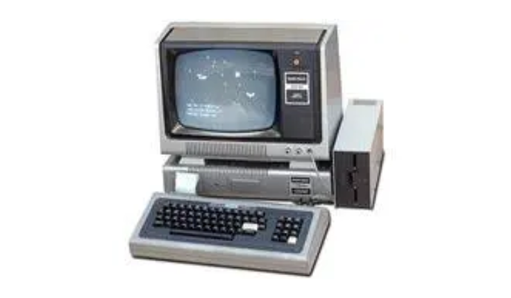
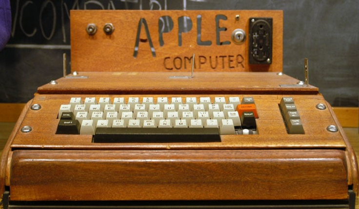
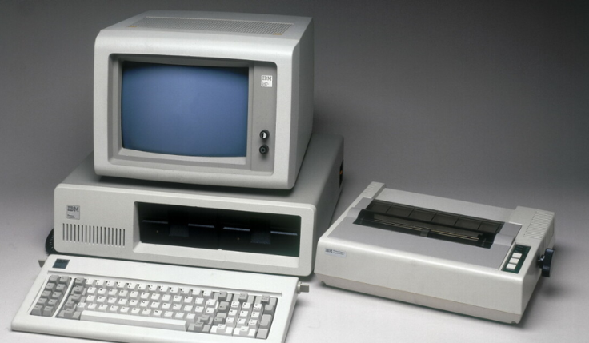

A Intel projeta o microprocessador 8080 (que origina os microcomputadores) e vários computadores pessoais chegaram ao mercado, como: Scelbi, Mark-8 Altair, IBM 5100, TRS-80 da Radio Shack e o Commodore PET.
Inicia-se a 4ª geração de computadores.

1976
Steve Jobs e Steves e Woznick lançam o primeiro microcomputador comercial, o do Apple I.

1981
A IBM apresenta seu microcomputador — Acorn — com o sistema operacional elaborado pela Microsoft (MS-DOS), chip Intel, monitor colorido opcional e dois disquetes.

1984
A Apple lançou o Macintosh, primeiro computador que todas as pessoas o pudessem utilizar e que contava com ícones e mouse.